A dead-simple writing app with Vim motions.
One window, one column of text, and nothing else on screen. Underneath it is real Vim: text objects, registers, macros, marks, :s and :g, each checked key for key against Neovim. For Markdown first, and code too.
$ curl -fsSL https://github.com/codemonkey76/omavim/releases/latest/download/omavim-x86_64-linux.tar.gz | tar -xz -C ~/.local --strip-components=1
Linux, x86_64. Installs into ~/.local, no Rust needed. MIT. More ways to install
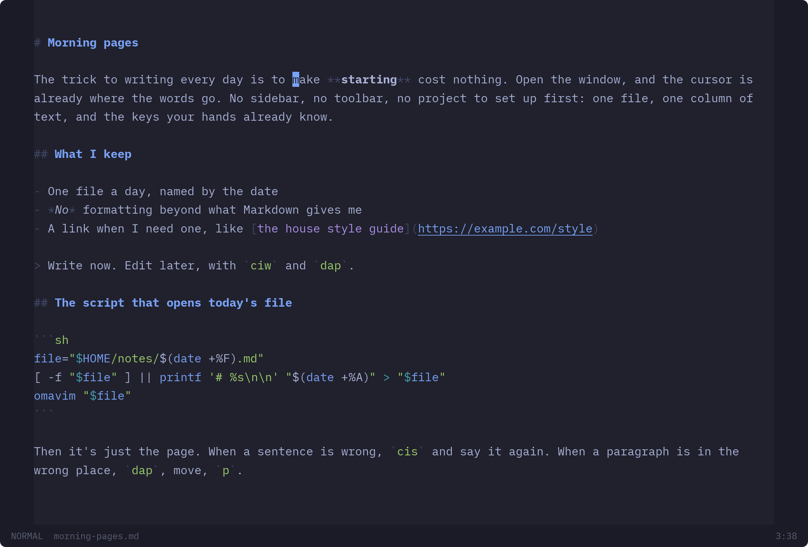
See it move
Change a sentence, select a heading's whole section, replace a word everywhere, undo, redo.
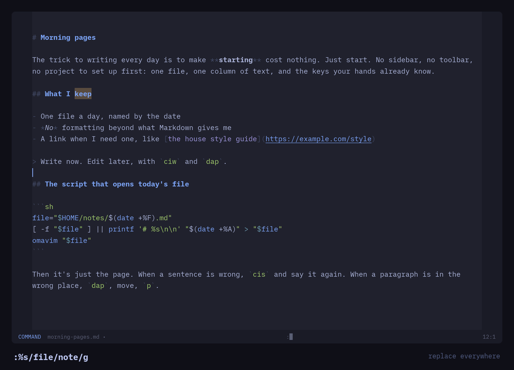
Vim, measured against Vim
Most "Vim modes" stop at hjkl and dw. This one is the editor, not an add-on, and for each case it must end with the same text, cursor, mode, registers, scroll position, marks and jump list that Neovim does.
- Modes
- normal, insert, replace, visual by character, line and block, and the command line
- Motions
- w b e ge f t ; , { } ( ) % H M L and by screen line: gj gk g0 g$
- Operators
- d c y > < gu gU g~ gq gw J . with counts, and Ctrl-A Ctrl-X on numbers
- Text objects
- iw is ip i( i" it and their a forms
- Registers
- "a–"z, "0–"9, "_, and "+ for the desktop clipboard
- Macros
- q @ @@ with counts
- Marks
- m ' ` kept on their text as it's edited, the jump list on Ctrl-O Ctrl-I
- Search
- / ? n N * # with Vim's pattern syntax, matches highlighted as you type
- Commands
- :s with ranges and flags, :g :v :normal :m :t :d, history on Up and Down
The full list is in the README, and in the app on Space ?.
Made for prose
Lines wrap at word breaks, and j and k move by the line you see. cis changes a sentence, dap takes a paragraph, gq reflows one.
Markdown has objects of its own, read from the syntax tree: i* emphasis, il a link, ic a code block, and ah a heading with everything under it. ]h goes to the next heading.
Drafts are written as you type and offered back after a crash. A file changed by something else is loaded again, or asked about if you have changes of your own.
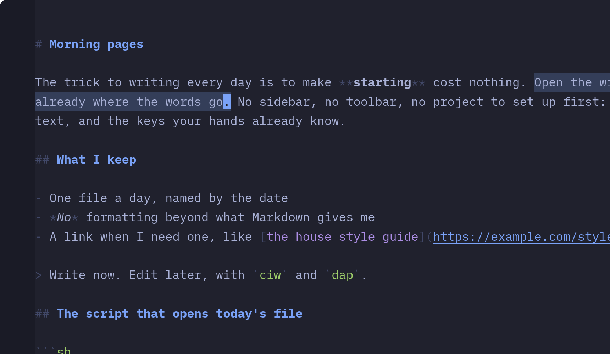
And code
Tree-sitter highlighting for Rust, Python, JavaScript, TypeScript, Go, C, PHP, Lua, Bash, SQL, HTML, CSS, JSON, TOML and YAML. Code blocks in Markdown are highlighted in their own language.
The same tree gives text objects that know the code: if af a function, ik ak a class, ia aa a parameter, i/ a comment, and ]f [f to move between functions.
Parsing happens off the keystroke, so a key costs under a millisecond even in a 50,000-line file.
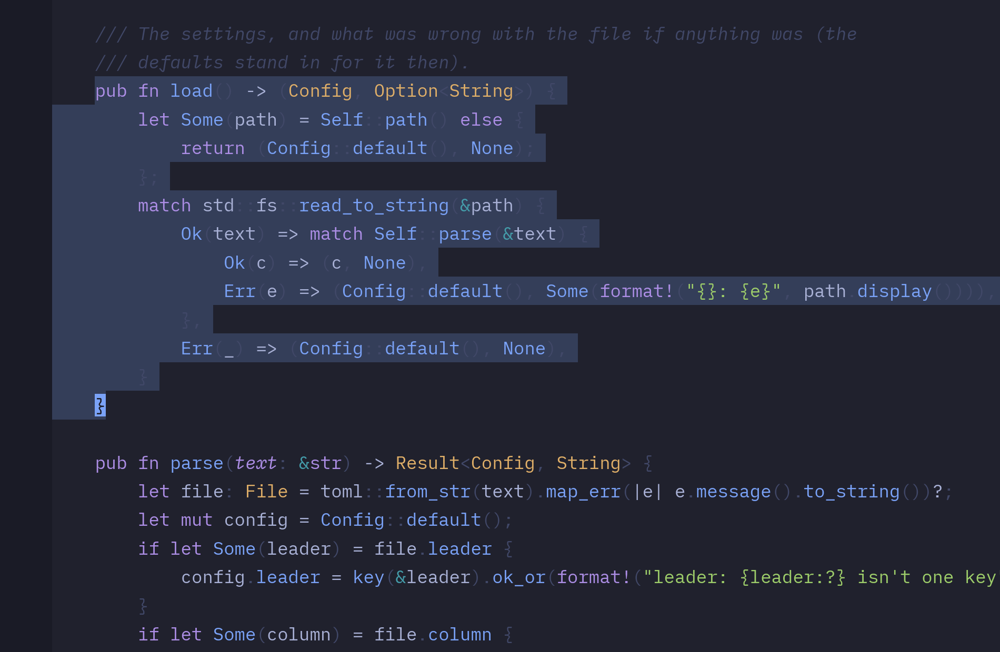
Follows your desktop
On Omarchy, Omavim takes the current theme's colours and changes with it, live. Elsewhere it follows the desktop's dark or light setting. Text size follows the desktop too. The font is iA Writer Mono, built in.
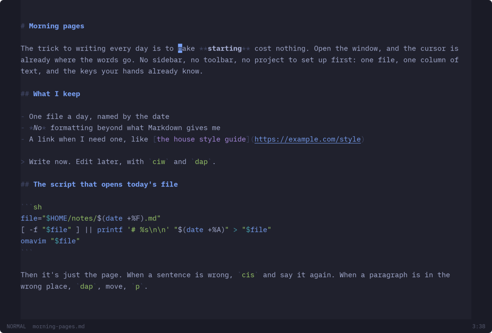
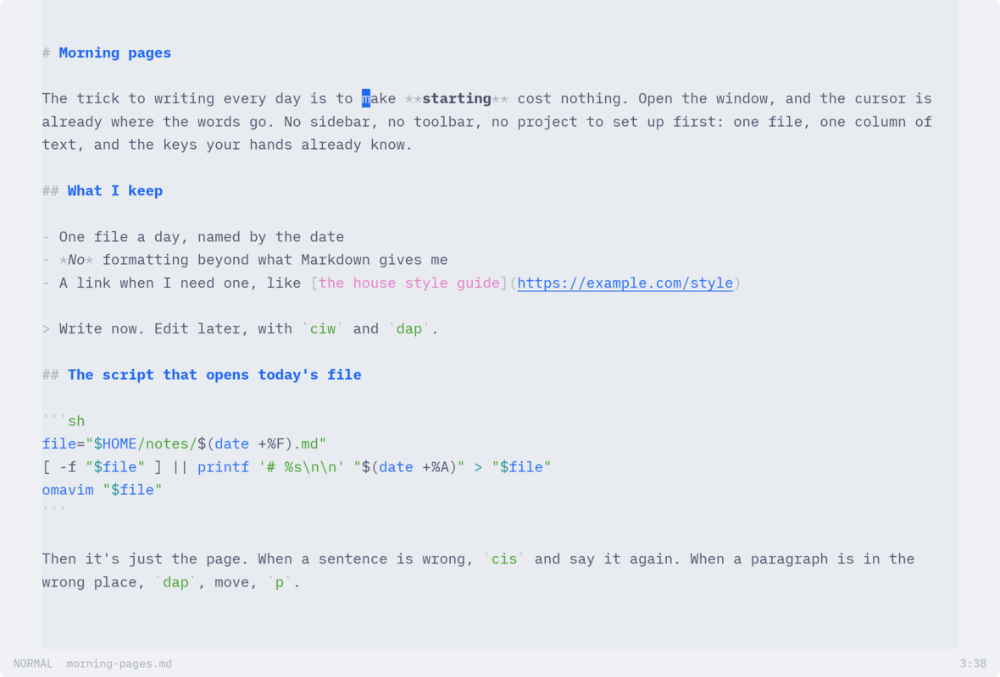
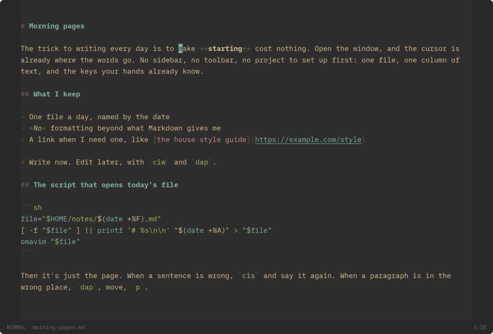
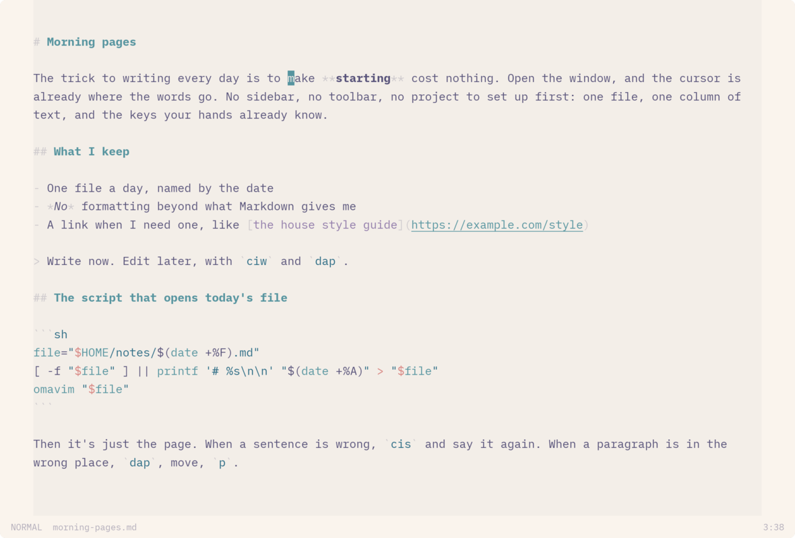
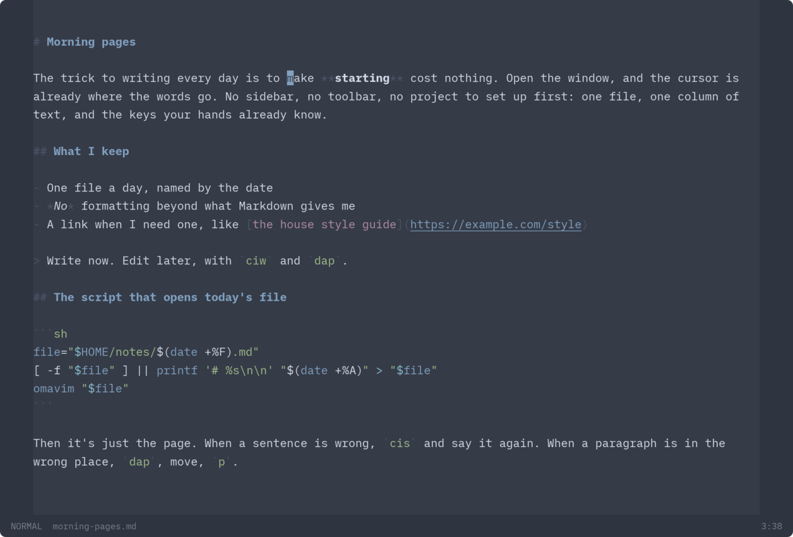
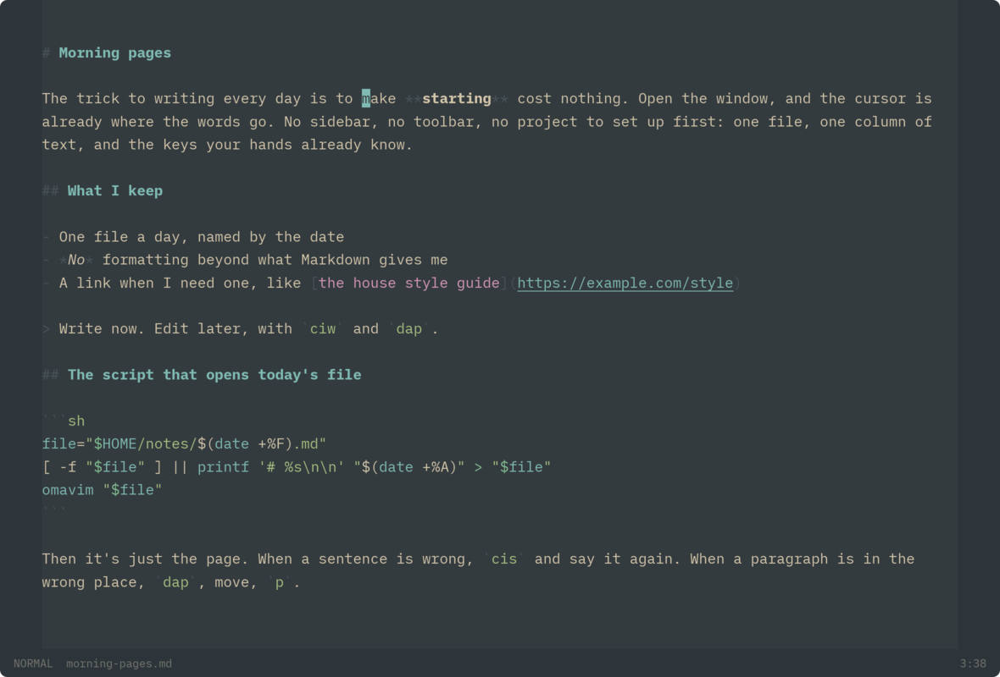
The few keys that aren't Vim's
Everything Omavim adds sits behind a leader key, Space, so nothing clashes with Vim. Both the leader and the keys can be changed in ~/.config/omavim/config.toml.
| Space w | save (Ctrl+S works in every mode too) |
| Space o | open, through the desktop's file picker |
| Space b i l | bold, italic, link: the word or the selection |
| Space p | print, at 12pt on the paper you pick |
| Space f | fullscreen |
| Space n | a new window |
| Space ? | the key reference |
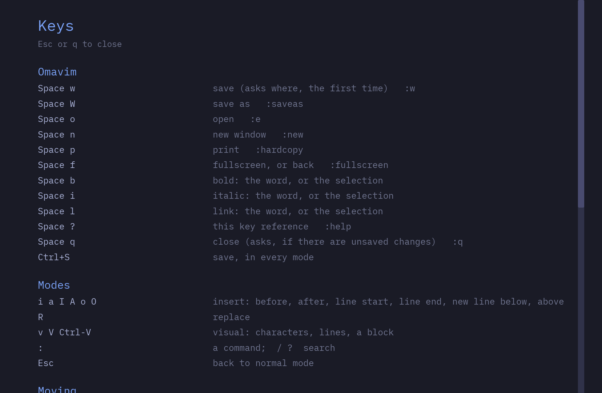
What it isn't
Omavim edits one file in one window. It is not an IDE and isn't trying to become one, so these are left out on purpose:
- language servers, completion and diagnostics
- a file tree, splits, tabs and project search
- plugins, Vimscript and
.vimrc - folds, spell checking and :! filters
If you want those, Neovim and Helix are right there. Omavim is for the times you want the page and your hands, and nothing to configure.
Install
The latest release, unpacked into ~/.local. It puts omavim in ~/.local/bin and adds it to your app launcher.
$ curl -fsSL https://github.com/codemonkey76/omavim/releases/latest/download/omavim-x86_64-linux.tar.gz | tar -xz -C ~/.local --strip-components=1 $ omavim notes.md
On Arch or Omarchy, from source:
$ git clone https://github.com/codemonkey76/omavim && cd omavim/pkgbuild && makepkg -si
It needs xdg-desktop-portal and a backend such as xdg-desktop-portal-gtk for the file pickers, printing, and following dark/light and text size. Omarchy and most desktops already have them. There's a checksum beside each release.